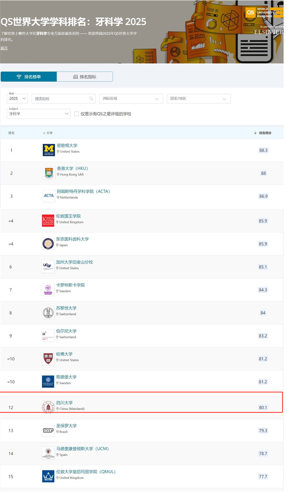

学院通知 · 教学通知
四川大学口腔医学位列2025年度QS世界大学学科排行榜全球第十二
发布时间：2025/03/13
3月12日，国际高等教育研究机构QS发布了2025 QS世界大学学科排名，四川大学口腔医学位列全球第12位，居中国内地第一。 2025年QS排名对全球100个国家/地区超过1700所大学在55个学科领域的表现进行了独立的对比分析，涵盖五大类学科：艺术与人文、工程与技术、生命科学、自然科学和社会科学。 下一步，我院将继续对标世界一流口腔院校，梳理学科建设路径，深化国际合作，持续提升中国口腔医学的国际影响力，为世界口腔医学发展注入中国智慧。
